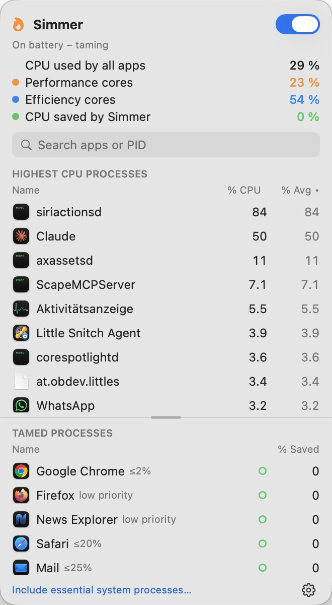
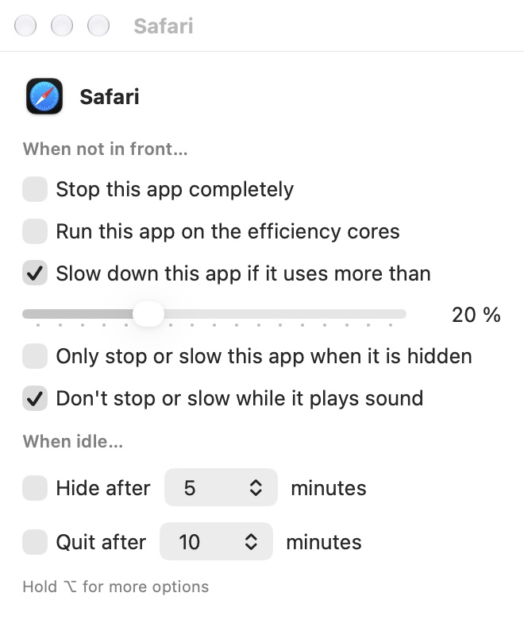
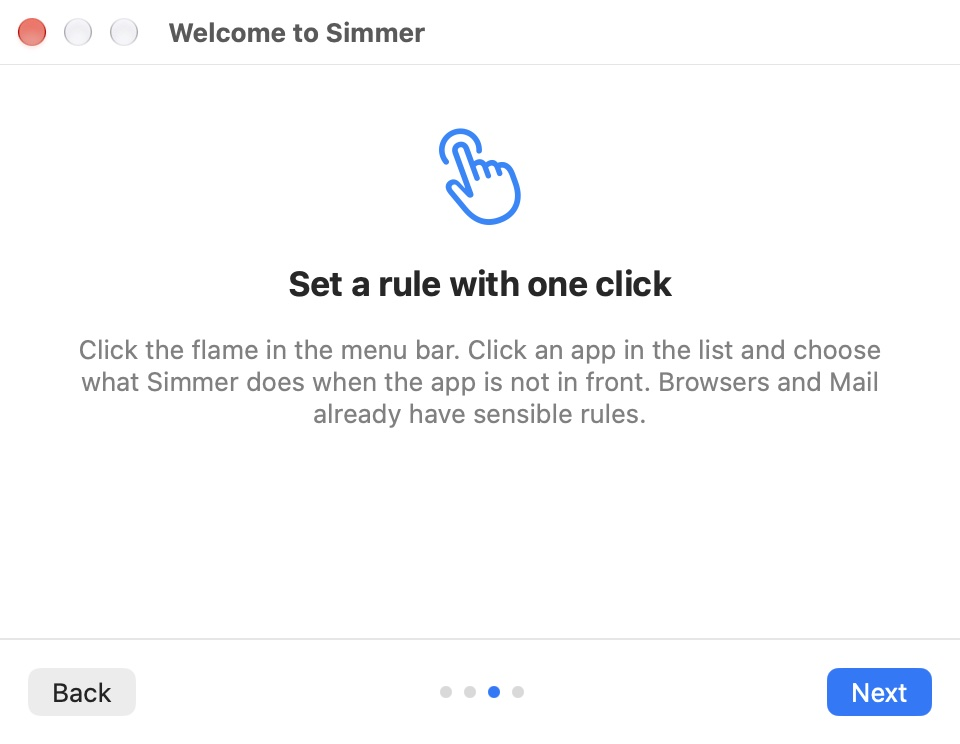

Tame power-hungry apps when your laptop runs on battery.



| Simmer (download) | Simmer Lite (App Store) | |
|---|---|---|
| Efficiency cores in background | ✓ | ✓ |
| CPU limit 1–500 % | ✓ | — |
| Stop apps in background | ✓ | — |
| Hide or quit when idle | ✓ | — |
| System processes (Spotlight, backups …) | ✓ with helper | — |
| Faster Time Machine backups | ✓ with helper | — |
The App Store only allows sandboxed apps, and the sandbox forbids pausing or limiting other apps. Simmer Lite does what the sandbox allows; the download edition does everything.
Simmer-x.y.z.zip from the latest release and unzip it.Simmer.app to your Applications folder and open it. The app is signed and notarized by Apple, so it opens without warnings.Do not run Simmer together with another app tamer — both would fight over the same apps.
| Feature | Permission |
|---|---|
| Control system processes (full edition) | Helper — approve once in System Settings → General → Login Items |
| High-CPU alerts | Notifications |
Every permission is requested only when the matching feature is used for the first time.
No accounts, no tracking, no analytics, no third-party SDKs and no network access at all. Simmer reads process names and CPU times on your computer and keeps your rules in its own settings. Nothing leaves your computer.
Read the full privacy policy →
Questions, bug reports and ideas belong in the issue tracker — that is the fastest way to reach the developer: